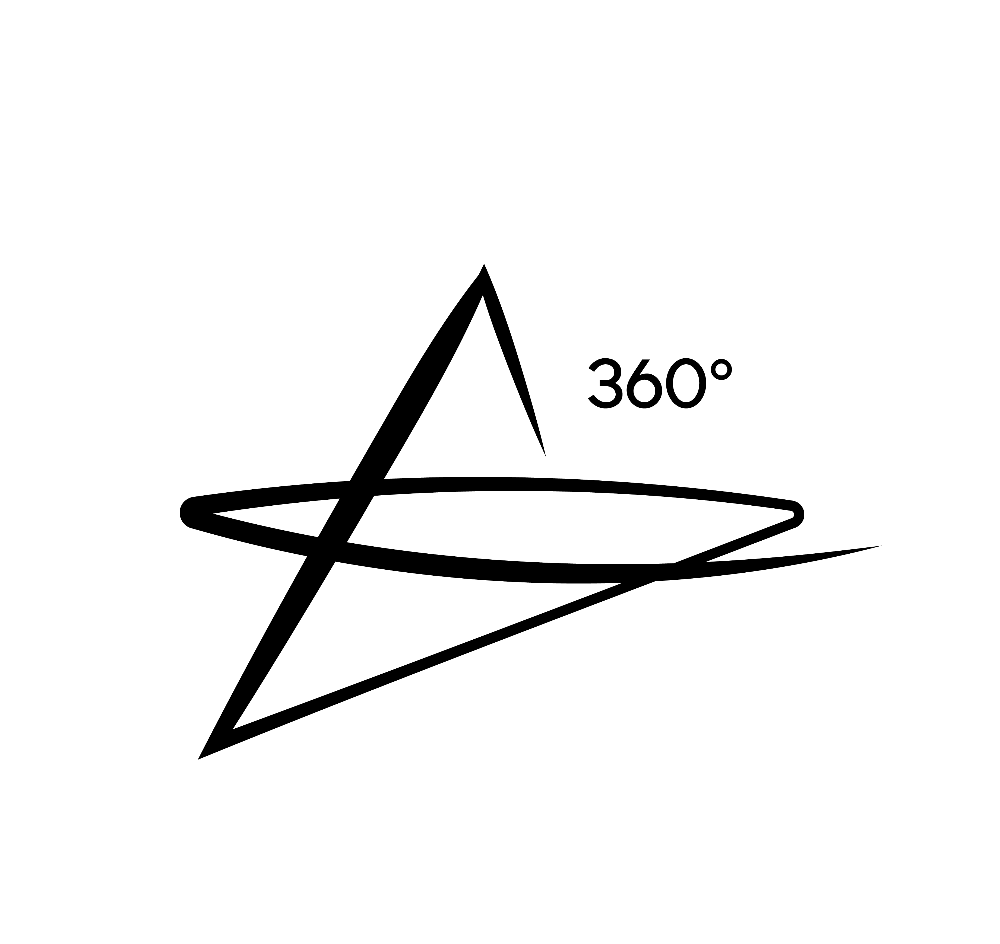
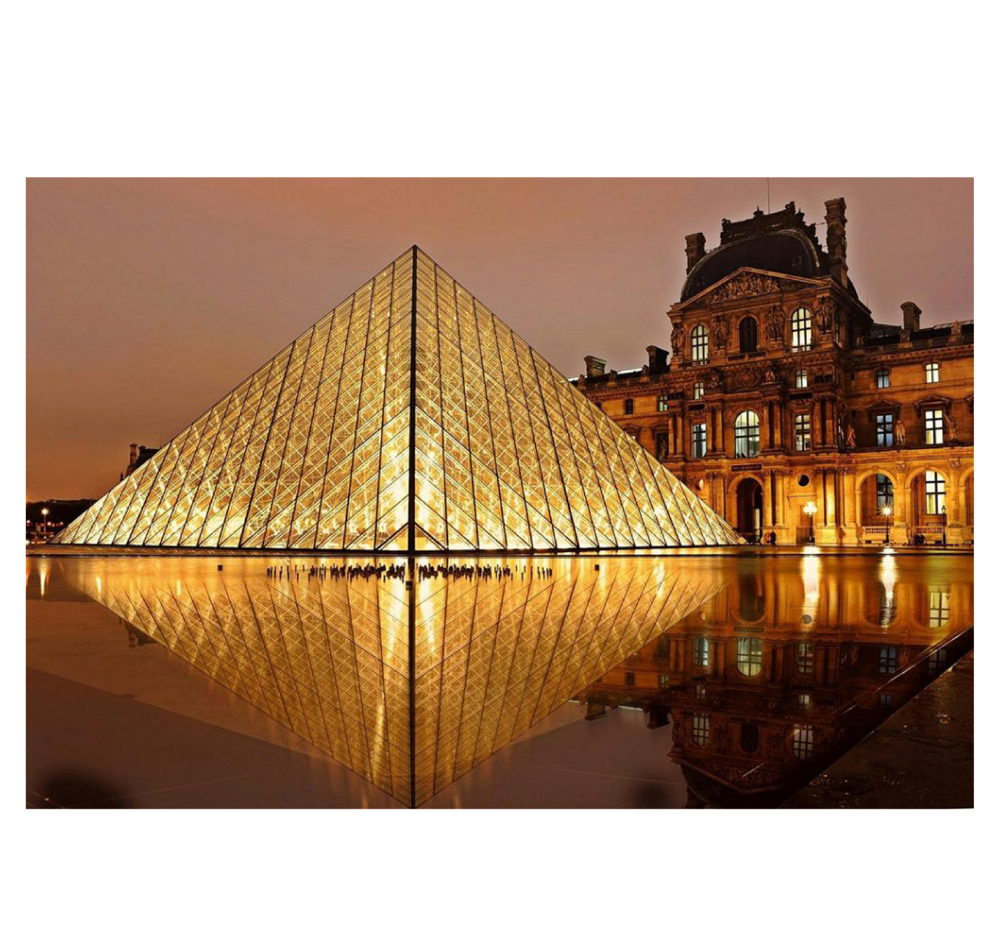
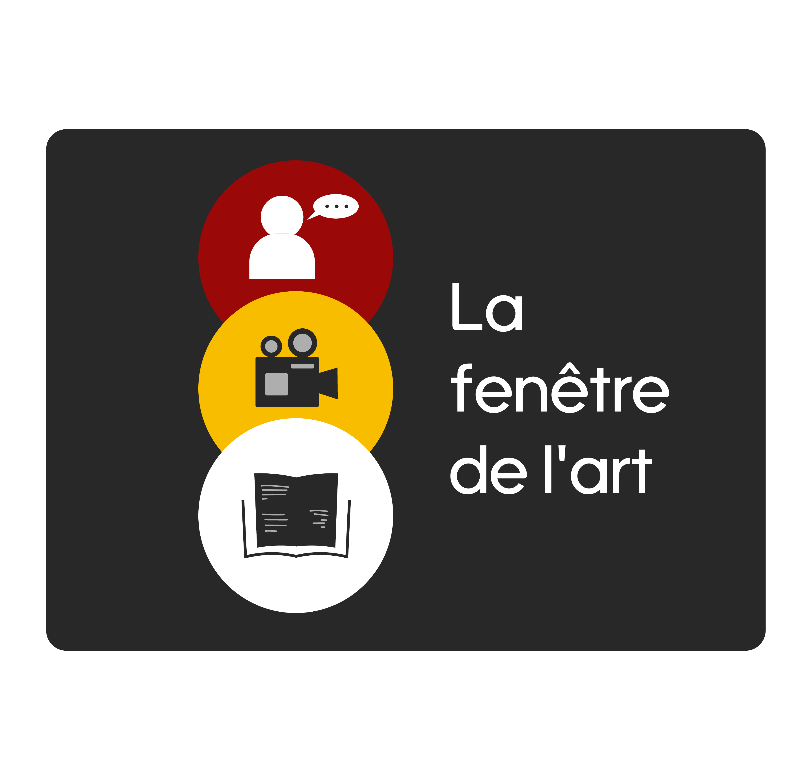
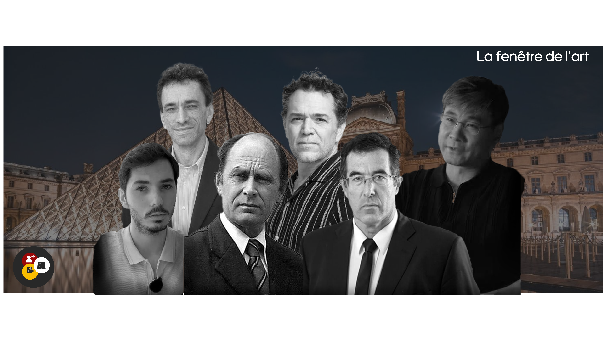
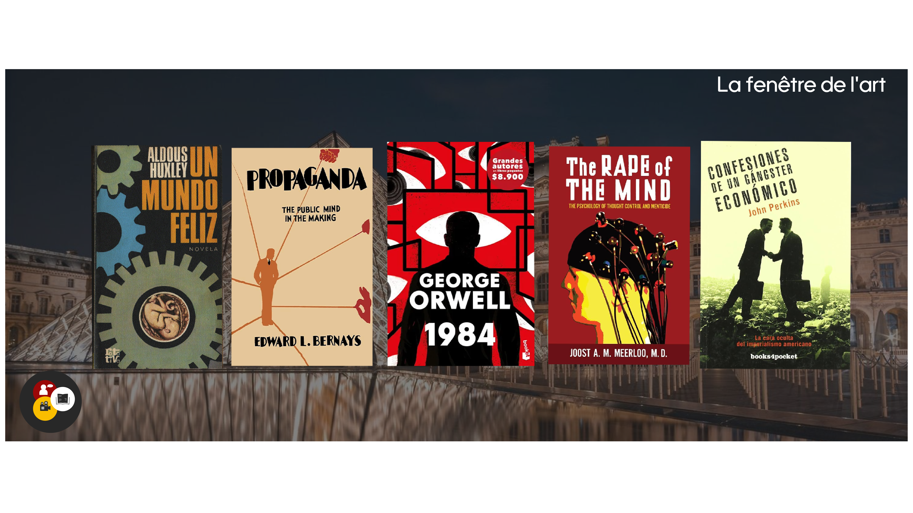
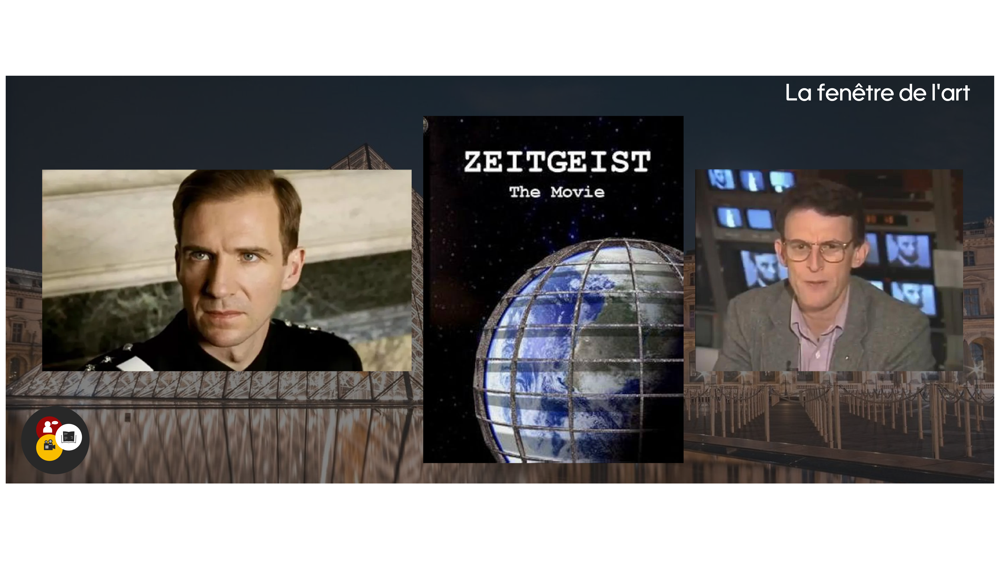

Museo de Louvre
El Museo de Louvre está situado en el corazón de París, a las orillas del río Sena este museo Es el más grande de arte, es famoso y es visitado a través de muchas personas alrededor del mundo. Su origen se remonta al siglo XII Cuando comenzó como una fortaleza medieval destinada a proteger a la ciudad para poder convertirse en majestuoso Palacio Real de la dinastía francesa. Y no fue hasta 1793 que en la plena revolución francesa pudo abrir sus puertas al público como un museo nacional.
Entre las miles de maravillas universales que alberga el museo destaca por custodiar algunas de las piezas más influyentes de la historia de la humanidad. Estas sobresalen la icónica mona lisa de Leonardo da Vinci como una de las tantas.


Da una vuelta 360 para mejor experiencia visual y asi conocer todo el entorno.
Así se ve el Museo de Louvre una tarde tranquila y linda.
Festival
Te invitamos a ser parte de esta gran experiencia cultural que está integrada, diseñada para poder conectar a las ideas, la literatura y el propio lenguaje visual de nuestro propio festival. Además, contaremos con una cuidada Selección de presentaciones de libros, permitiendo al público descubrir nuevas obras, interactuar con autores y poder profundizar en la riqueza de las propias letras.
El evento integrará una muestra audiovisual que explorará la fuerza de la imagen en el movimiento y la propia narrativa digital, esto a través de la proyección de contenidos creativos y piezas documentales. La jornada ofrecerá una mirada envolvente donde las palabras habladas y la escritura y el arte visual se entrelazan entre sí. Esperamos este sábado a las 7:40 H de la noche.

Ponentes
El festival será el punto de reunión de 6 destacados historiadores, pensadores e investigadores internacionales que cuestionan la narrativa oficial para poder analizar la geopolítica, el poder global y la identidad cultural desde diferentes perspectivas críticas. En el ámbito de la estructura de poder y las finanzas continentales, el propio investigador español Jorge Guerra explorará las redes de élite y el poder oculto a través de su obra la gran nobleza negra, mientras que la memoria histórica del historiador británico Antony Sutton revelará cómo la alta finanza y las transferencias tecnológicas internacionales influyeron decisivamente en el surgimiento del modelo soviético.
El pensamiento hispanoamericano y el desarrollo de los Estados será abordado por la perspectiva analítica del sociólogo argentino Marcelo Gullo. El gran historiador mexicano Juan Miguel Zunzunegui, cuyo trabajo es desmontar los mitos históricos para superar los traumas colectivos y construir una identidad crítica a través de la geopolítica mundial.
Y finalmente, terminaríamos con la revisión histórica y las dinámicas estratégicas que se completan con Guillermo más Arellano es un analista que reivindica la Hispanidad, el combate a la leyenda negra y examina la raíz tradicional de la filosófica cultura española, junto al profesor Jiang Xueqin quién aplica la teoría de juegos y el legalismo clásico para poder descifrar el futuro de las potencias mundiales y la inteligencia artificial dentro el colapso de la globalización armónica.

Libros
El programa editorial del festival reúne 5 obras fundamentales que desvelan la dinámica del control social y la manipulación del pensamiento, junto con la arquitectura del poder global y en el ámbito de las distopías literarias, la psicología colectiva, la narrativa y mucho más.George Orwell abre con la narrativa. Advierte sobre el totalismo, la censura sistemática y la anulación del pensamiento crítico mediante el uso de la neolengua y la reestructura de la historia. A esta visión se le suma un mundo feliz, de Aldous Huxley, quien examina el sometimiento social mediante la fuerza. También mientras el Tratado clínico The Rape of the mind de Joost Merloo profundiza en menticidio detallado como el miedo sostenido, la saturación informativa y los reflejos condicionados que pueden quebrar la autonomía mental de la sociedad modernas.
Por última parte, en la sección de ensayos geopolíticos de la persuasión pública se exponen los mecanismos reales que operan tras el orden internacional de las masas. John Perkins. Aporta un testimonio directo sobre el neoclasicismo financiero, revelando cómo la manipulación de deudas y la prisión corporativa y la intervención encubierta que han sido utilizadas para subordinar los recursos nacionales. Y finalmente llegamos con Edward Bernays, que analiza el psicoanálisis freudiano con la psicología de masas para poder explicar la persuasión afectiva y la manipulación consciente de los deseos inconscientes, y también se convierte en el motor invisible de las democracias de consumo moderno y actual.

Audiovisual
En la muestra audiovisual del propio festival se reúnen las 3 producciones cinematográficas y documentales que exploran la alegoría política y la desmitificación institucional, junto con la arquitectura del sistema financiero global. La selección abre con Land of the Blind del 2006, esta es una sátira Política oscura y escrita y dirigida por Robert Edwards y protagonizada por Ralph Fiennes y Donald Sutherland. Esta obra fue inspirada por la experiencia del propio director de inteligencia militar y en los ciclos históricos de la revolución fallida. En la cinta se aborda la paradoja del poder en un nuevo régimen revolucionario y termina replicando la misma brutalidad y el fanatismo del despotismo caído.
La muestra documental examina los fenómenos de comunicación de masas y la economía moderna a través de las piezas emblemáticas. Zeitgeist, Es una obra independiente creada por Peter Joseph, quien se convirtió en el fenómeno viral de insignia con la contracultura digital de los años 2000. Los orígenes mitológicos de la religión, los acontecimientos del 11 de septiembre y la emisión de deuda de la Reserva Federal Fue la cuestión de la estructura social con el control de ellos. Finalmente, The Money Masters, dirigida por Bill Still y Patrick S. J. Karmak, ofrece un minucioso análisis de más de 3 horas sobre cómo la historia del dinero fiduciario y la banca de reservas fraccionaria con el monopolio de los bancos centrales, invitando al espectador a reflexionar sobre la soberanía económica y el propio origen de las crisis financieras contemporáneas.

«El arte no es un espejo para reflejar la realidad, sino un martillo para darle forma.» — Bertolt Brecht